Professional
Introduction
From Twitch Streaming to Game Development and everything in between, I continue to aim higher, reach further, and grow my skill set to reach my goals.
Content Creation
Skills: Community Management, Marketing, Networking, Public Relations, Influencer Relations, Media Experience, Brand Partnerships, Hosting
Achievements: Working with amazing people and brands!
In 2015, through my passion and self-discipline, I gained a lot of traction as a content creator from New Zealand. It was not yet a
thriving scene, and the NZ media hadn't yet caught on to "live-streaming", "content creation" or "influencers" and the mammoths these have become today.
I was contacted by my local newspaper, the "Hawke's Bay Today", where they released my first ever article about what I was doing. Fairly soon after, other news and media agencies
began reaching out to me. I've had airtime on TV with TVNZ Sunday, The Project, and SKY TV.
I've completed sponsorships and partneships for technology peripheral brands like HyperX, Logitech G, JBL, where they would provide gear and compensation in return for me endorsing them.
I have worked with other brands like Playtech NZ, Intel, Lenovo, and Omen by HP. PlayStation and Xbox NZ have also worked with me, sending me video games to review and with unique media kits,
and inviting me to important events. I was even part of the Xbox Series X|S launch in Queenstown or as they called it "Greenstown". Household brands like Spark NZ, Vodafone, OPPO and McDonald's are also on my resume.
Many global video game Studios and PR companies around the world have me on their email lists, with a number of these relationships and connections still active today!
I believe what made my channel and brand so popular, was my consistency, bubbly nature, and charismatic attitude while playing video games on the hardest difficulty. I engaged with my audiences
in meaningful ways, both online and in person, encouraging acceptance and a sense of community. Twitch streaming was my full-time job and sole income source between 2015 and 2018, in which I feel so grateful. Right now, it remains a hobby ^.^
Check out some of my content below!
Game Development
Skills: Game Production, Game Design, Community Management, Studio Management, Leadership, Business Strategy, Professional Raport
Achievements: Two Video Game Credits
A44 Games - Flintlocke: Seige of Dawn
I have a fairly decent following on social media through content creation, so I used this to my advantage and put out a "tweet" with a signal that I was interested in working in Game Development, particularly somewhere in Community Management and Marketing. I got a reply from a studio, A44 Games in Wellington New Zealand, who were looking for a Community Manager. It sounds silly, but that's truly how I got my first game development job!Through my Community Management I made blogs for their website on their already released game Ashen, scheduled engaging social media posts, and collated content creator media kits that were sent to select influencers globally.
I was later asked to become a Producer for their Code department, and later their Design department. It was through my Production experience where I absorbed how an independent game studio functions, becoming inspired to begin my own.
Chromatic Pie Games - The Cobbler
I created Chromatic Pie Games with the vision of running an independent video game studio in New Zealand that bridges social gaps in our game development industry. Concentrating on being inclusive with the slogan "We're all slices from the same pie" in which the pie represents all of us, and the insides are a rainbow that represent our diversities.I received private funding to create my first prototype, bringing my vision for The Cobbler to life with the help of a contracted Artist, Animator and Programmer. Once our prototype was midway, I applied for a grant to get a free ticket to the Game Developer Conference in San Francisco in 2024, to which I was selected and had two weeks to organise my flights and accommodation! It was a whirlwind of a time where I networked my heart out, attended an array of talks, and caught up with friends. I also headed along to Gamescom in Germany a few months later, and got more fantastic feedback on The Cobbler's Pitch Deck. After careful consideration I decided that I would study a Bachelor of Computing Systems Degree to learn Programming, and personally hone my art, animation and wider skill sets, before I approach future funding pathways for this project.
RocketWerkz - Icarus
Prior to working on The Cobbler's prototype, I was contacted about a Community Management job in Auckland at a studio called RocketWerkz.They were working on a game called Icarus that had not yet launched. I helped to build an engaged and thriving community through Discord, Steam, and Social Media, growing excitement around their development milestones. I worked on ideas for the game development livestreams, kept the community up to date with the latest news with blogs and announcements, handled influencer relations with content creators and PR companies, and more.
Game Development is a passion of mine, where I aim to become an independent developer. So far, this goal of mine is coming to fruition! Watch this space!
 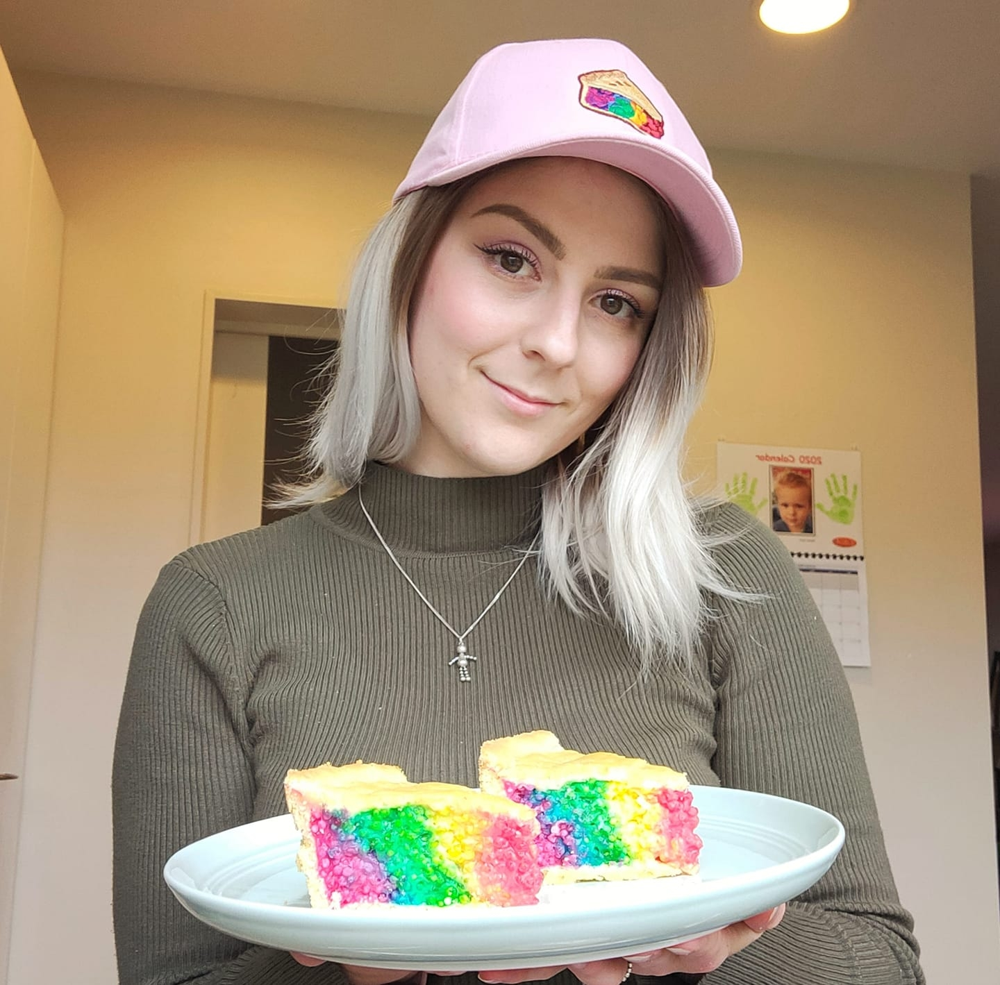
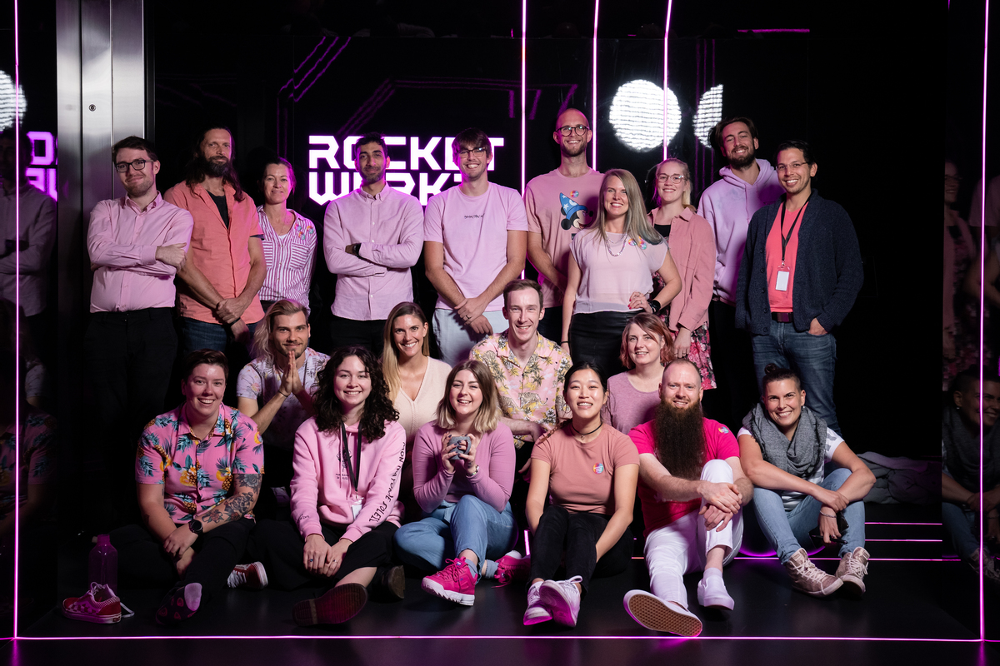
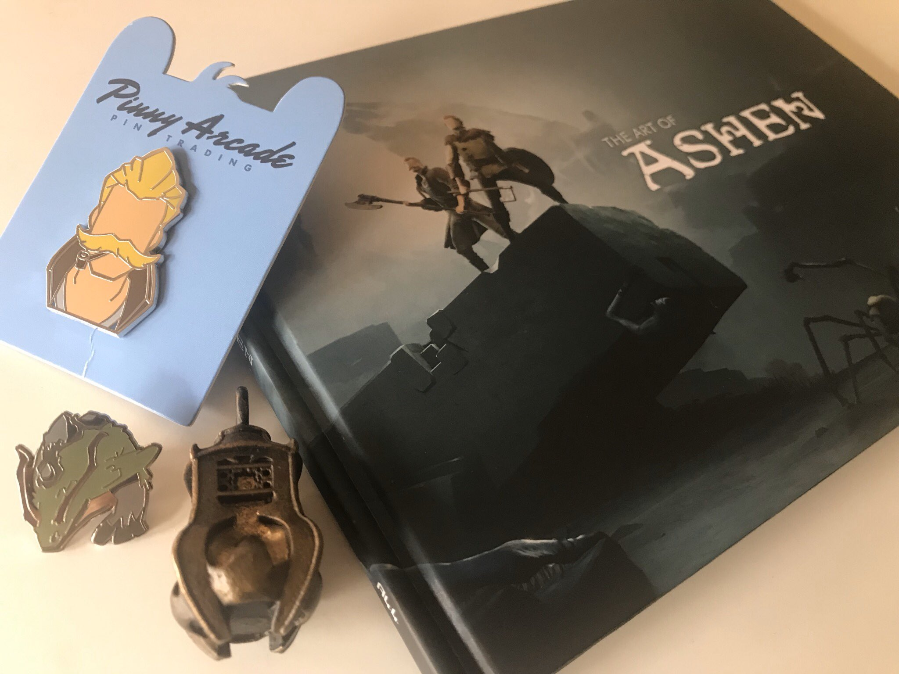
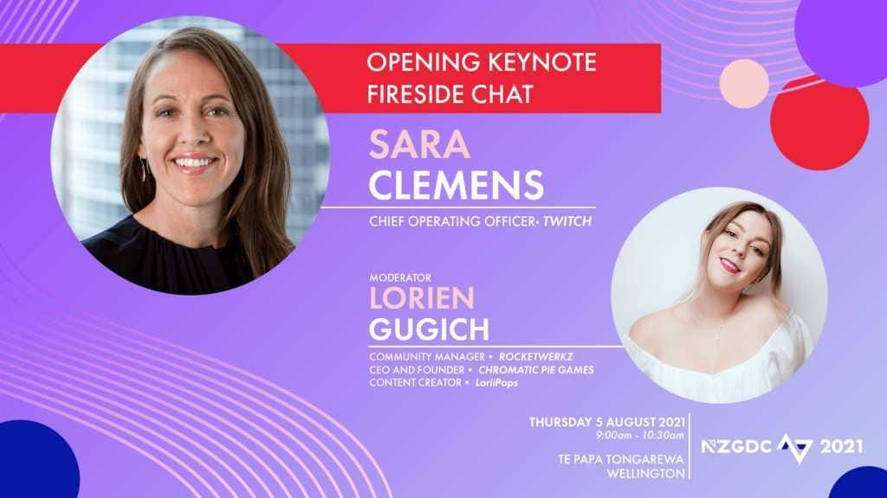
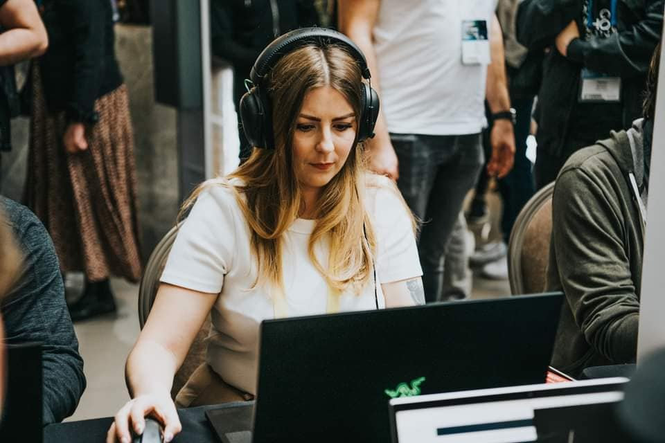
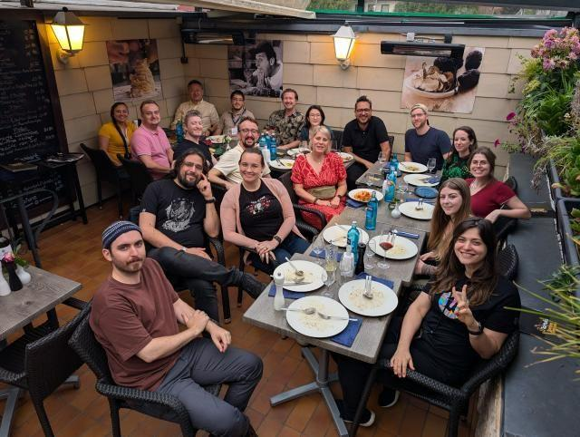
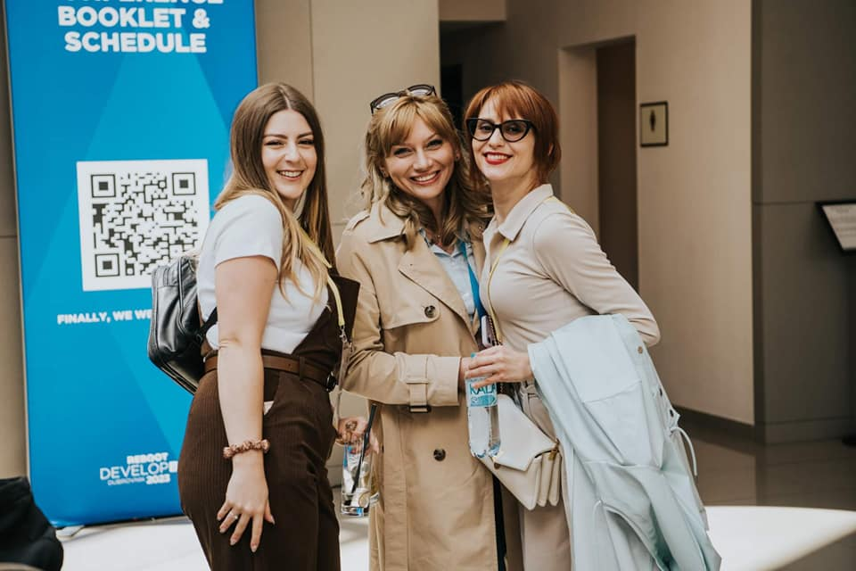
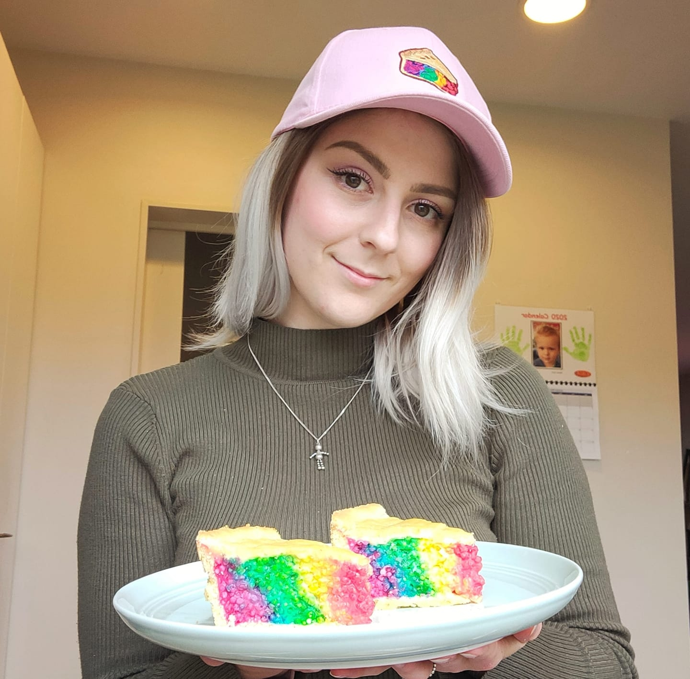
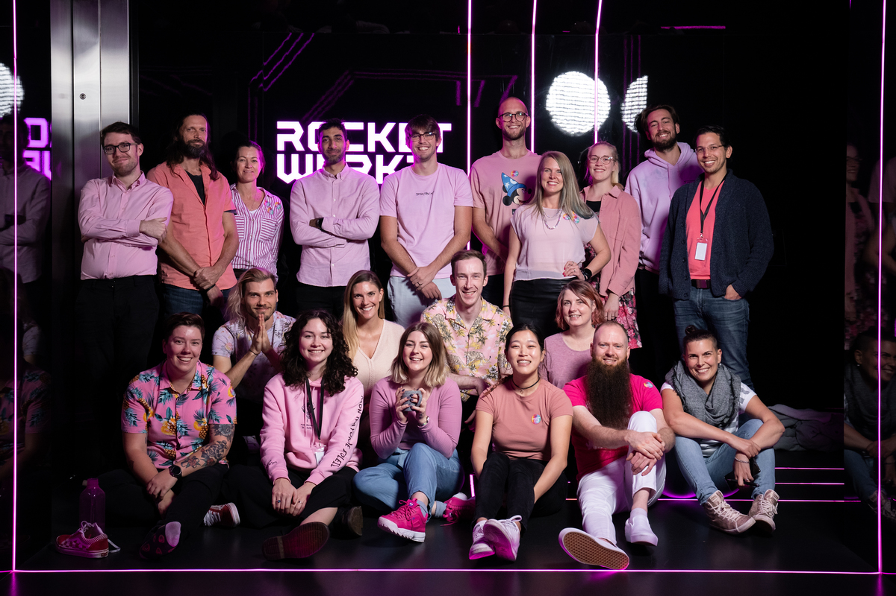
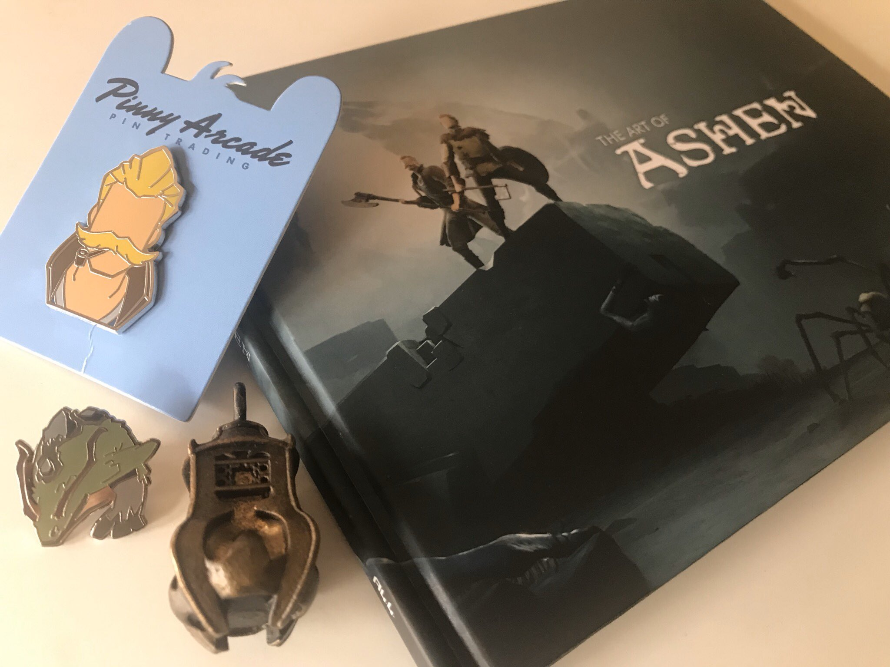
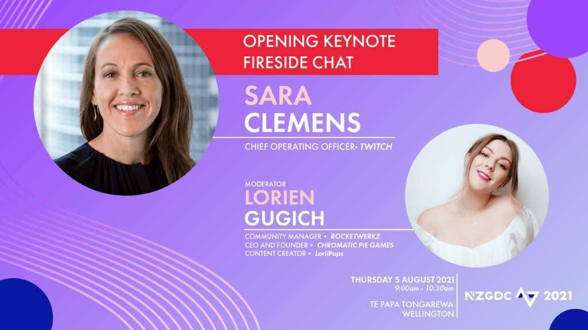
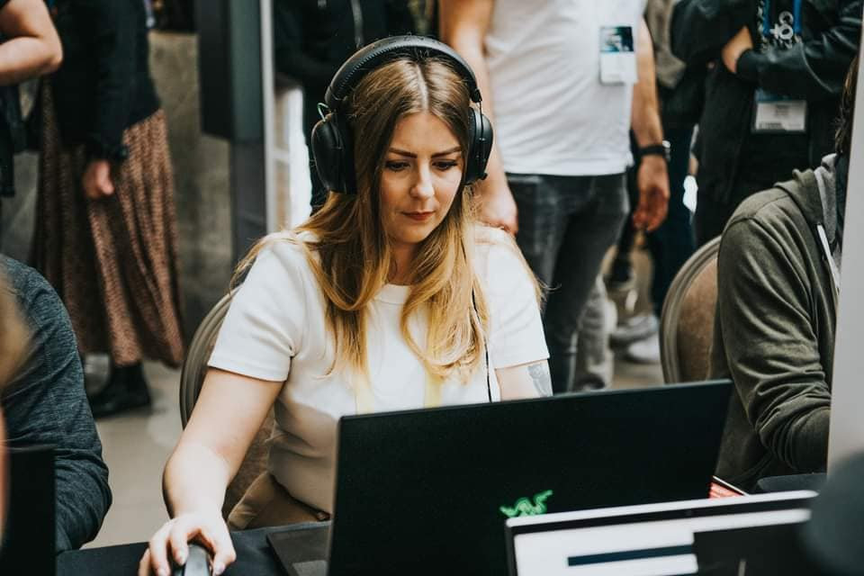
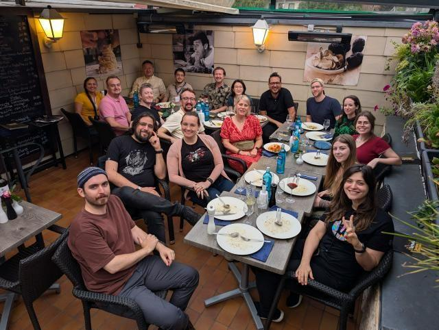
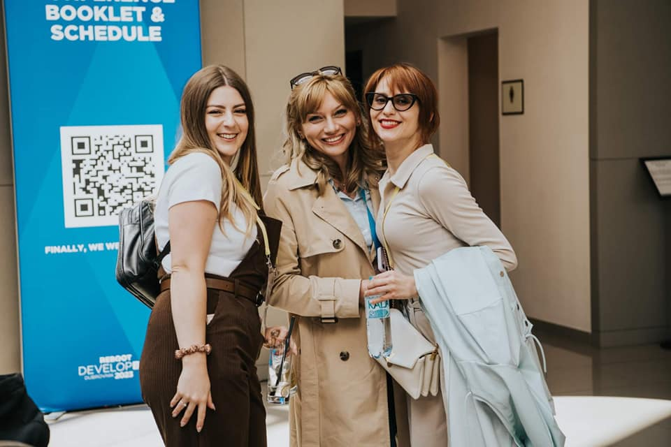
Countries Visited
Skills: Well Organised Traveller, Defeater of Jet-Lag
Achievements: Worldly, Appreciation for Cultures
Through my Content Creation and Game Development careers, I have been lucky enough to travel to numerous countries for events, conventions, conferences and e-sports competitions.
Some of these countries include USA, Australia, South Korea, Thailand, Croatia and Germany.
Across the last 10 years, I have attended Penny Arcade Expo's (PAX), Entertainment Expo's (formerly known as E3), Twitch Con's, Gamescom, and a few Intel Extreme Masters competitions.
Game Development has many conferences around the world. Namely, the USA has the Game Developer Conference (GDC) held in San Francisco every year, with another held in Croatia
(and in other countries) called the Reboot Developer Conference. Many countries host their own local conferences and meetups, including New Zealand which has the NZ Game Developer Conference.
I wouldn't have imagined being this well travelled by the age of 33, especially through such a career in video games!